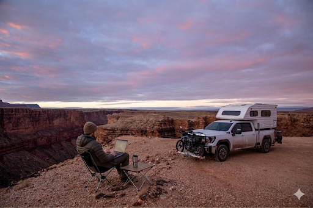

Field Reports

What I love most about design is the process of observing how people use and live within complicated systems, finding opportunities for improvement, and working with talented people to create beautiful and simple solutions.
Outside of work, my soul sings when I spend time outside. In 2018, I thru-hiked the Pacific Crest Trail from Mexico to Canada. Since then, I have tried my best to spend every spare moment exploring and photographing the backcountry on skis, bikes, boats, and everything in between.
Lately, this has looked like prototyping and building simulation and evaluation systems that evaluate the safety of our autonomous vehicles. While the era of frontier models and LLMs brings uncertainty, I love diving into how people think about and use these new AI tools and frameworks as they do technical work in the enterprise. Developer experience has pivoted dramatically to more conversational interfaces, so what does excellent UI and service design look like? I often ask my teammates and friends about what the future role of product design looks like in this new era, but until that becomes clear I'll continue to try to using human-centered design to help people leverage artificial intelligence, big data and cloud computing to do good in the world.